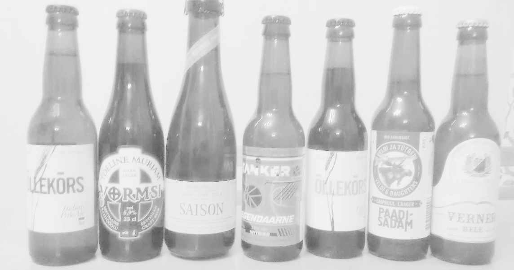

Test, mille ülesandeks on anda soovituse Sinu jaoks parima Eesti käsitööõlle valimiseks
| Firma | Õlu | Tüüp |
|---|---|---|
| Lehe | Blackmouth Cur | American Pale Ale |
| Põhjala | Must Kuld | Porter |
| Õllekõrs | Indian Pale Ale | Pale Ale |
| Õllekõrs | Coffee Stout | Stout |
| Õllenaut | Vanaeit | Wheat Ipa |
| Muddis | Saison | Saison |
| Vormsi | Tõeline Murjam | Dark Lager |
| Raasiku õlletehas | Verner hele | Saksa laager |
| Vormsi | Wormsi Enn | Pilsner |
| Raasiku õlletehas | Verner meeõlu | Meeõlu |